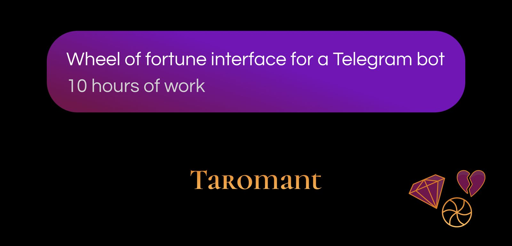
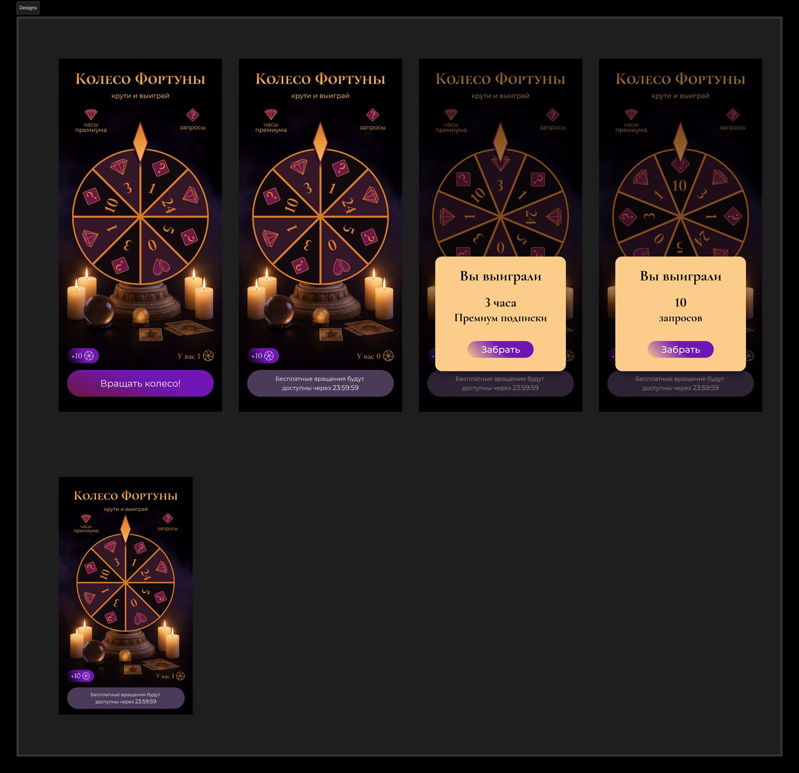
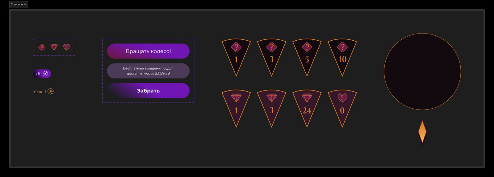

Колесо фортуны для телеграм-бота TaromantFortune wheel for the Taromant Telegram bot
Монетизация бота через геймификациюBot monetization through gamification
S — SituationS — Situation
Taromant — Telegram-бот с ИИ-тарологом. Монетизация через лимит: 1 бесплатный запрос раз в 2 дня, дальше — покупка запросов или подписки. Жёсткий paywall, без игрового повода вернуться и доплатить.
Taromant is a Telegram bot with an AI tarot reader. Monetization relied on a hard limit — 1 free request every 2 days, then paid requests or subscription. A strict paywall with no playful reason to come back and pay extra.
T — TaskT — Task
Цель — встроить в бота колесо фортуны как soft-монетизацию: дать игровой повод возвращаться и покупать спины вместо жёсткого «закончились запросы → плати».
Мне нужно было отрисовать UI и ассеты под эту механику — так, чтобы визуал совпадал с брендом бота, а разработка могла сразу собрать анимированное колесо.
Что на выходе:
- Экономика секторов: запросы (1 / 3 / 5 / 10) · подписка премиум (1 / 3 / 24ч) · ничего
- Ассеты: фон, 3 иконки, 8 изображений секторов, стрелка + фон и ободок колеса, кнопки «Крутить» / «Нельзя крутить» (кулдаун 24ч) / «Купить 10 спинов» / «Забрать»
- Экраны: спин доступен (баланс ≥ 1), спинов нет, модалка с выигрышем
Ограничения: покупка спинов — через нативное окно бота; колесо целиком не рисовать — секторами, под JS-библиотеку клиента.
Goal — embed a fortune wheel as soft monetization: give players a playful reason to return and buy spins instead of a hard “out of requests → pay” wall.
I had to draw the UI and assets for this mechanic — matching the bot's brand, ready for developers to assemble the animated wheel right away.
Deliverables:
- Sector economy: requests (1 / 3 / 5 / 10) · premium subscription (1 / 3 / 24h) · nothing
- Assets: background, 3 icons, 8 sector images, pointer + wheel background and rim, buttons “Spin” / “Can't spin” (24h cooldown) / “Buy 10 spins” / “Claim”
- Screens: spin available (balance ≥ 1), no spins, win modal
Constraints: spin purchases via the bot's native window; don't draw the whole wheel — sectors only, for the client's JS library.
A — ActionA — Action
1. Изучила референсы колеса в мобильных играх → составила 3 мудборда → клиенту понравились все; предложила гибрид 1+3 под стиль сайта.
1. Studied wheel references in mobile games → made 3 moodboards → the client liked all of them; proposed a 1+3 hybrid matching the site style.
2. Изучила документацию JS-библиотеки для понимания требований к дизайну и технических возможностей.
3. Согласовала скоуп с клиентом, уточнила градации секторов и модалку с выигрышем.
4. Сгенерировала фоновую картинку в ChatGPT и доработала в PS; подготовила сектора под сборку, собрала интерфейс, состояния CTA и модалку с выигрышем; подготовила и отдала экспорт в разработку. Плюс один адаптив под меньшие экраны.
2. Studied the JS library docs to understand design requirements and technical capabilities.
3. Aligned scope with the client, clarified sector tiers and the win modal.
4. Generated the background in ChatGPT and refined it in PS; prepared sectors for assembly, built the interface, CTA states and the win modal; handed off exports to development. Plus one adaptive layout for smaller screens.


R — ResultR — Result
Сдано за ~10 часов: полный комплект ассетов и 3 экрана под JS-сборку колеса. Фича ещё не запущена — метрик нет. User-тестов не было: валидация через согласование с клиентом.
| Для пользователя | Цикл: крутить → выигрыш / ничего → ждать 24ч или купить ×10 |
| Для бизнеса | Soft-монетизация + призы = запросы и подписка премиум |
| Для разработки | Секторы готовы к анимации без ручной нарезки |
Delivered in ~10 hours: a full asset pack and 3 screens for the JS wheel assembly. The feature hasn't launched yet — no metrics. No user tests: validated through client alignment.
| For users | Loop: spin → win / nothing → wait 24h or buy ×10 |
| For business | Soft monetization + prizes = requests and premium subs |
| For developers | Sectors ready for animation, no manual slicing |